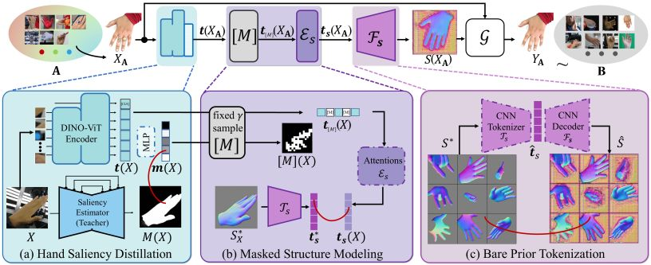
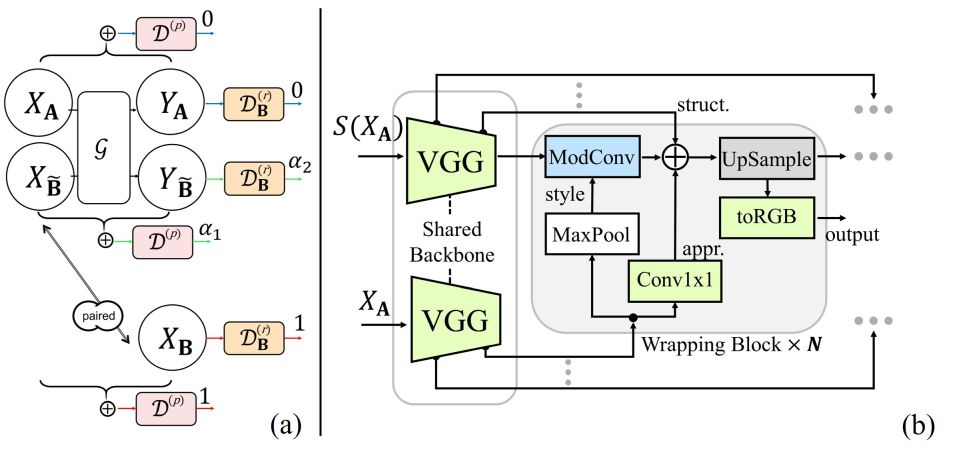
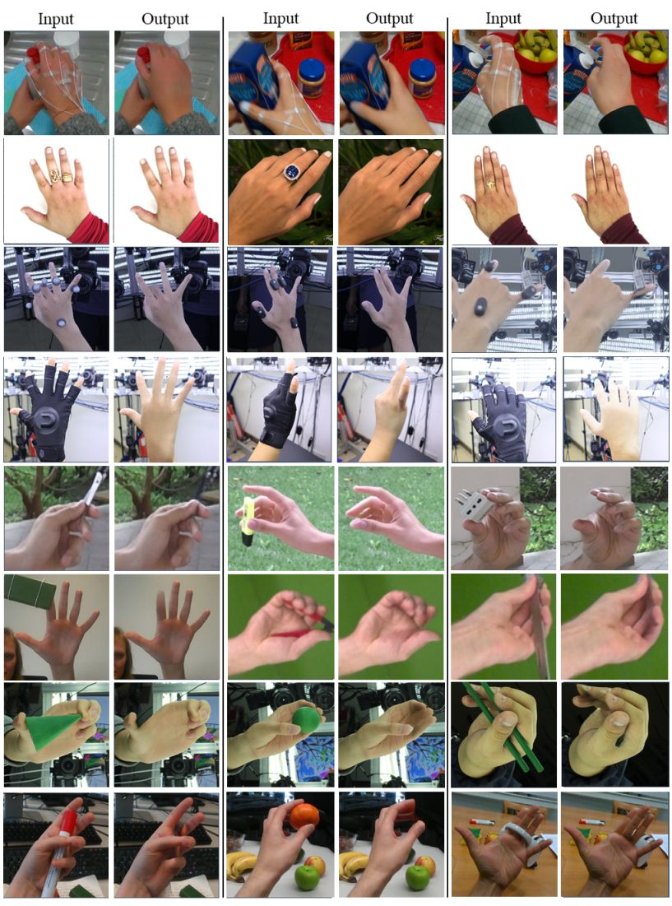
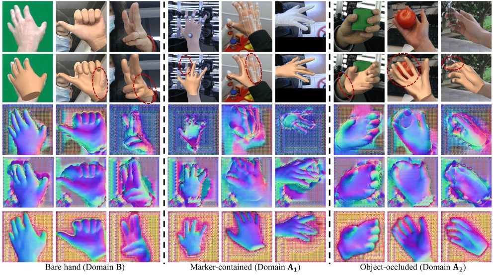
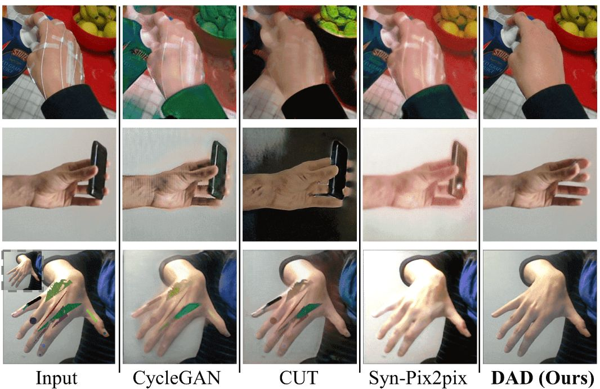
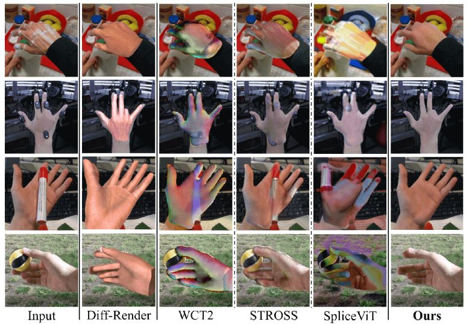

IEEE/CVF Conference on Computer Vision and Pattern Recognition (CVPR), 2023
Semi-supervised Hand Appearance Recovery via Structure Disentanglement and Dual Adversarial Discrimination

Hand appearance recovery pipeline.
(a)~(c) Learning modules to disentangle bare hand structure map. Then a generative translator learns to wrap the structure map with the appearance in original image through DAD scheme. Abstract
Enormous hand images with reliable annotations are collected through marker-based MoCap. Unfortunately, degradations caused by markers limit their application in hand appearance reconstruction. A clear appearance recovery insight is an image-to-image translation trained with unpaired data. However, most frameworks fail because there exists structure inconsistency from a degraded hand to a bare one. The core of our approach is to first disentangle the bare hand structure from those degraded images and then wrap the appearance to this structure with a dual adversarial discrimination (DAD) scheme. Both modules take full advantage of the semi-supervised learning paradigm: The structure disentanglement benefits from the modeling ability of ViT, and the translator is enhanced by the dual discrimination on both translation processes and translation results. Comprehensive evaluations have been conducted to prove that our framework can robustly recover photo-realistic hand appearance from diverse marker-contained and even object-occluded datasets. It provides a novel avenue to acquire bare hand appearance data for other downstream learning problems.
Semi-supervised Paradigm

DAD scheme and Translator architecture. (a) DAD introduces both result discriminator and process discriminator together to judge a multimodal translation process. (b) Our translator takes the estimated structure map and original image together as the inputs and separately extracts their multi-level features with a shared CNN backbone.
Results

Qualitative recovery results from marker-contained data and object-occluded data.

Comparisons on Structure disentanglements. (Row-1) Input images. (Row-2) Mesh recovery by a template-based strategy. (Row-3) Structure prediction by a template-free strategy. (Row-4) Structure prediction by our sketcher w/o/ bare structure prior. (Row-5) Structure disentanglement by our full sketcher. Red circles indicate the artifacts in the results.


Reference
Zimeng Zhao, Binghui Zuo, Zhiyu Long and Yangang Wang. "Semi-supervised Hand Appearance Recovery via Structure Disentanglement and Dual Adversarial Discrimination". IEEE/CVF Conference on Computer Vision and Pattern Recognition, (CVPR), 2023.
Acknowledgments: This work was supported in part by the National Natural Science Foundation of China (No. 62076061), in part by the Natural Science Foundation of Jiangsu Province (No. BK20220127).